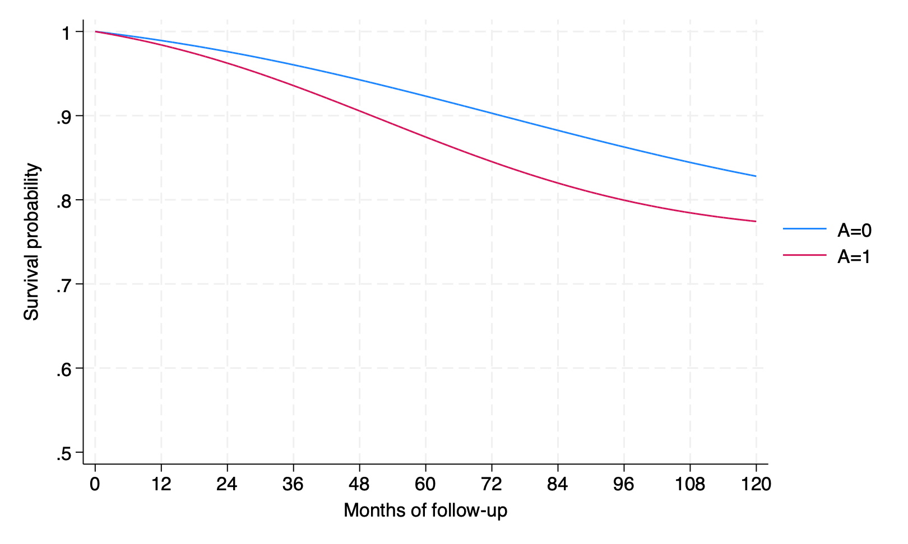
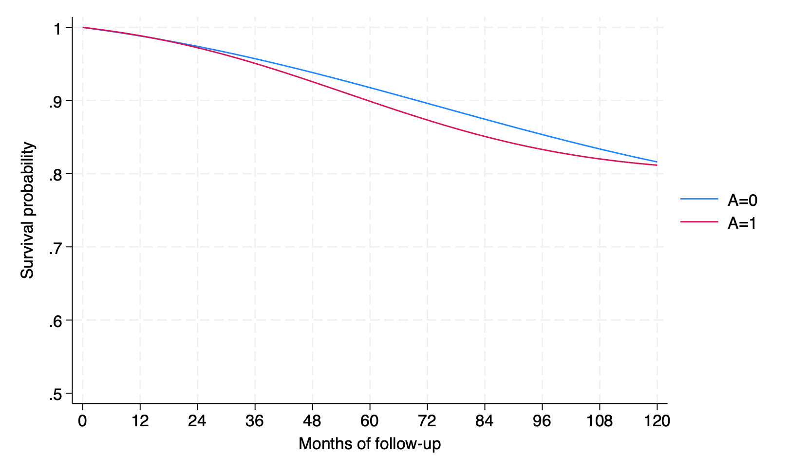

17. Causal survival analysis: Stata
library(Statamarkdown)/***************************************************************
Stata code for Causal Inference: What If by Miguel Hernan & Jamie Robins
Date: 10/10/2019
Author: Eleanor Murray
For errors contact: ejmurray@bu.edu
***************************************************************/Program 17.1
- Nonparametric estimation of survival curves
- Data from NHEFS
- Section 17.1
use ./data/nhefs-formatted, clear
/*Some preprocessing of the data*/
gen survtime = .
replace survtime = 120 if death == 0
replace survtime = (yrdth - 83)*12 + modth if death ==1
* yrdth ranges from 83 to 92*
tab death qsmk
/*Kaplan-Meier graph of observed survival over time, by quitting smoking*/
*For now, we use the stset function in Stata*
stset survtime, failure(death=1)
sts graph, by(qsmk) xlabel(0(12)120)
qui gr export ./figs/stata-fig-17-1.png, replace(1,566 missing values generated)
(1,275 real changes made)
(291 real changes made)
death |
between | quit smoking between
1983 and | baseline and 1982
1992 | No smokin Smoking c | Total
-----------+----------------------+----------
0 | 963 312 | 1,275
1 | 200 91 | 291
-----------+----------------------+----------
Total | 1,163 403 | 1,566
Survival-time data settings
Failure event: death==1
Observed time interval: (0, survtime]
Exit on or before: failure
--------------------------------------------------------------------------
1,566 total observations
0 exclusions
--------------------------------------------------------------------------
1,566 observations remaining, representing
291 failures in single-record/single-failure data
171,076 total analysis time at risk and under observation
At risk from t = 0
Earliest observed entry t = 0
Last observed exit t = 120
Failure _d: death==1
Analysis time _t: survtime
Program 17.2
- Parametric estimation of survival curves via hazards model
- Data from NHEFS
- Section 17.1
- Generates Figure 17.4
/**Create person-month dataset for survival analyses**/
/* We want our new dataset to include 1 observation per person
per month alive, starting at time = 0.
Individuals who survive to the end of follow-up will have
119 time points
Individuals who die will have survtime - 1 time points*/
use ./data/nhefs-formatted, clear
gen survtime = .
replace survtime = 120 if death == 0
replace survtime = (yrdth - 83)*12 + modth if death ==1
*expand data to person-time*
gen time = 0
expand survtime if time == 0
bysort seqn: replace time = _n - 1
*Create event variable*
gen event = 0
replace event = 1 if time == survtime - 1 & death == 1
tab event
*Create time-squared variable for analyses*
gen timesq = time*time
*Save the dataset to your working directory for future use*
qui save ./data/nhefs_surv, replace
/**Hazard ratios**/
use ./data/nhefs_surv, clear
*Fit a pooled logistic hazards model *
logistic event qsmk qsmk#c.time qsmk#c.time#c.time ///
c.time c.time#c.time
/**Survival curves: run regression then do:**/
*Create a dataset with all time points under each treatment level*
*Re-expand data with rows for all timepoints*
drop if time != 0
expand 120 if time ==0
bysort seqn: replace time = _n - 1
/*Create 2 copies of each subject, and set outcome to missing
and treatment -- use only the newobs*/
expand 2 , generate(interv)
replace qsmk = interv
/*Generate predicted event and survival probabilities
for each person each month in copies*/
predict pevent_k, pr
gen psurv_k = 1-pevent_k
keep seqn time qsmk interv psurv_k
*Within copies, generate predicted survival over time*
*Remember, survival is the product of conditional survival probabilities in each interval*
sort seqn interv time
gen _t = time + 1
gen psurv = psurv_k if _t ==1
bysort seqn interv: replace psurv = psurv_k*psurv[_t-1] if _t >1
*Display 10-year standardized survival, under interventions*
*Note: since time starts at 0, month 119 is 10-year survival*
by interv, sort: summarize psurv if time == 119
*Graph of standardized survival over time, under interventions*
/*Note, we want our graph to start at 100% survival,
so add an extra time point with P(surv) = 1*/
expand 2 if time ==0, generate(newtime)
replace psurv = 1 if newtime == 1
gen time2 = 0 if newtime ==1
replace time2 = time + 1 if newtime == 0
/*Separate the survival probabilities to allow plotting by
intervention on qsmk*/
separate psurv, by(interv)
*Plot the curves*
twoway (line psurv0 time2, sort) ///
(line psurv1 time2, sort) if interv > -1 ///
, ylabel(0.5(0.1)1.0) xlabel(0(12)120) ///
ytitle("Survival probability") xtitle("Months of follow-up") ///
legend(label(1 "A=0") label(2 "A=1"))
qui gr export ./figs/stata-fig-17-2.png, replace(1,566 missing values generated)
(1,275 real changes made)
(291 real changes made)
(169,510 observations created)
(169510 real changes made)
(291 real changes made)
event | Freq. Percent Cum.
------------+-----------------------------------
0 | 170,785 99.83 99.83
1 | 291 0.17 100.00
------------+-----------------------------------
Total | 171,076 100.00
Logistic regression Number of obs = 171,076
LR chi2(5) = 24.26
Prob > chi2 = 0.0002
Log likelihood = -2134.1973 Pseudo R2 = 0.0057
-------------------------------------------------------------------------------
event | Odds ratio Std. err. z P>|z| [95% conf. interval]
--------------+----------------------------------------------------------------
qsmk | 1.402527 .6000025 0.79 0.429 .6064099 3.243815
|
qsmk#c.time |
Smoking ce.. | 1.012318 .0162153 0.76 0.445 .9810299 1.044603
|
qsmk#c.time#|
c.time |
Smoking ce.. | .9998342 .0001321 -1.25 0.210 .9995753 1.000093
|
time | 1.022048 .0090651 2.46 0.014 1.004434 1.039971
|
c.time#c.time | .9998637 .0000699 -1.95 0.051 .9997266 1.000001
|
_cons | .0007992 .0001972 -28.90 0.000 .0004927 .0012963
-------------------------------------------------------------------------------
Note: _cons estimates baseline odds.
(169,510 observations deleted)
(186,354 observations created)
(186354 real changes made)
(187,920 observations created)
(187,920 real changes made)
(372,708 missing values generated)
(372708 real changes made)
--------------------------------------------------------------------------------
-> interv = Original
Variable | Obs Mean Std. dev. Min Max
-------------+---------------------------------------------------------
psurv | 1,566 .8279829 0 .8279829 .8279829
--------------------------------------------------------------------------------
-> interv = Duplicat
Variable | Obs Mean Std. dev. Min Max
-------------+---------------------------------------------------------
psurv | 1,566 .774282 0 .774282 .774282
(3,132 observations created)
(3,132 real changes made)
(375,840 missing values generated)
(375,840 real changes made)
Variable Storage Display Value
name type format label Variable label
--------------------------------------------------------------------------------
psurv0 float %9.0g psurv, interv == Original
observation
psurv1 float %9.0g psurv, interv == Duplicated
observation

Program 17.3
- Estimation of survival curves via IP weighted hazards model
- Data from NHEFS
- Section 17.4
- Generates Figure 17.6
use ./data/nhefs_surv, clear
keep seqn event qsmk time sex race age education ///
smokeintensity smkintensity82_71 smokeyrs ///
exercise active wt71
preserve
*Estimate weights*
logit qsmk sex race c.age##c.age ib(last).education ///
c.smokeintensity##c.smokeintensity ///
c.smokeyrs##c.smokeyrs ib(last).exercise ///
ib(last).active c.wt71##c.wt71 if time == 0
predict p_qsmk, pr
logit qsmk if time ==0
predict num, pr
gen sw=num/p_qsmk if qsmk==1
replace sw=(1-num)/(1-p_qsmk) if qsmk==0
summarize sw
*IP weighted survival by smoking cessation*
logit event qsmk qsmk#c.time qsmk#c.time#c.time ///
c.time c.time#c.time [pweight=sw] , cluster(seqn)
*Create a dataset with all time points under each treatment level*
*Re-expand data with rows for all timepoints*
drop if time != 0
expand 120 if time ==0
bysort seqn: replace time = _n - 1
/*Create 2 copies of each subject, and set outcome
to missing and treatment -- use only the newobs*/
expand 2 , generate(interv)
replace qsmk = interv
/*Generate predicted event and survival probabilities
for each person each month in copies*/
predict pevent_k, pr
gen psurv_k = 1-pevent_k
keep seqn time qsmk interv psurv_k
*Within copies, generate predicted survival over time*
/*Remember, survival is the product of conditional survival
probabilities in each interval*/
sort seqn interv time
gen _t = time + 1
gen psurv = psurv_k if _t ==1
bysort seqn interv: replace psurv = psurv_k*psurv[_t-1] if _t >1
*Display 10-year standardized survival, under interventions*
*Note: since time starts at 0, month 119 is 10-year survival*
by interv, sort: summarize psurv if time == 119
quietly summarize psurv if(interv==0 & time ==119)
matrix input observe = (0,`r(mean)')
quietly summarize psurv if(interv==1 & time ==119)
matrix observe = (observe \1,`r(mean)')
matrix observe = (observe \3, observe[2,2]-observe[1,2])
matrix list observe
*Graph of standardized survival over time, under interventions*
/*Note: since our outcome model has no covariates,
we can plot psurv directly.
If we had covariates we would need to stratify or average across the values*/
expand 2 if time ==0, generate(newtime)
replace psurv = 1 if newtime == 1
gen time2 = 0 if newtime ==1
replace time2 = time + 1 if newtime == 0
separate psurv, by(interv)
twoway (line psurv0 time2, sort) ///
(line psurv1 time2, sort) if interv > -1 ///
, ylabel(0.5(0.1)1.0) xlabel(0(12)120) ///
ytitle("Survival probability") xtitle("Months of follow-up") ///
legend(label(1 "A=0") label(2 "A=1"))
qui gr export ./figs/stata-fig-17-3.png, replace
*remove extra timepoint*
drop if newtime == 1
drop time2
restore
**Bootstraps**
qui save ./data/nhefs_std1 , replace
capture program drop bootipw_surv
program define bootipw_surv , rclass
use ./data/nhefs_std1 , clear
preserve
bsample, cluster(seqn) idcluster(newseqn)
logit qsmk sex race c.age##c.age ib(last).education ///
c.smokeintensity##c.smokeintensity ///
c.smokeyrs##c.smokeyrs ib(last).exercise ib(last).active ///
c.wt71##c.wt71 if time == 0
predict p_qsmk, pr
logit qsmk if time ==0
predict num, pr
gen sw=num/p_qsmk if qsmk==1
replace sw=(1-num)/(1-p_qsmk) if qsmk==0
logit event qsmk qsmk#c.time qsmk#c.time#c.time ///
c.time c.time#c.time [pweight=sw], cluster(newseqn)
drop if time != 0
expand 120 if time ==0
bysort newseqn: replace time = _n - 1
expand 2 , generate(interv_b)
replace qsmk = interv_b
predict pevent_k, pr
gen psurv_k = 1-pevent_k
keep newseqn time qsmk interv_b psurv_k
sort newseqn interv_b time
gen _t = time + 1
gen psurv = psurv_k if _t ==1
bysort newseqn interv_b: ///
replace psurv = psurv_k*psurv[_t-1] if _t >1
drop if time != 119
bysort interv_b: egen meanS_b = mean(psurv)
keep newseqn qsmk meanS_b
drop if newseqn != 1 /* only need one pair */
drop newseqn
return scalar boot_0 = meanS_b[1]
return scalar boot_1 = meanS_b[2]
return scalar boot_diff = return(boot_1) - return(boot_0)
restore
end
set rmsg on
simulate PrY_a0 = r(boot_0) PrY_a1 = r(boot_1) ///
difference=r(boot_diff), reps(10) seed(1): bootipw_surv
set rmsg off
matrix pe = observe[1..3, 2]'
bstat, stat(pe) n(1629)Iteration 0: log likelihood = -893.02712
Iteration 1: log likelihood = -839.70016
Iteration 2: log likelihood = -838.45045
Iteration 3: log likelihood = -838.44842
Iteration 4: log likelihood = -838.44842
Logistic regression Number of obs = 1,566
LR chi2(18) = 109.16
Prob > chi2 = 0.0000
Log likelihood = -838.44842 Pseudo R2 = 0.0611
-------------------------------------------------------------------------------
qsmk | Coefficient Std. err. z P>|z| [95% conf. interval]
--------------+----------------------------------------------------------------
sex | -.5274782 .1540497 -3.42 0.001 -.82941 -.2255463
race | -.8392636 .2100668 -4.00 0.000 -1.250987 -.4275404
age | .1212052 .0512663 2.36 0.018 .0207251 .2216853
|
c.age#c.age | -.0008246 .0005361 -1.54 0.124 -.0018753 .0002262
|
education |
1 | -.4759606 .2262238 -2.10 0.035 -.9193511 -.0325701
2 | -.5047361 .217597 -2.32 0.020 -.9312184 -.0782538
3 | -.3895288 .1914353 -2.03 0.042 -.7647351 -.0143226
4 | -.4123596 .2772868 -1.49 0.137 -.9558318 .1311126
|
smokeintens~y | -.0772704 .0152499 -5.07 0.000 -.1071596 -.0473812
|
c. |
smokeintens~y#|
c. |
smokeintens~y | .0010451 .0002866 3.65 0.000 .0004835 .0016068
|
smokeyrs | -.0735966 .0277775 -2.65 0.008 -.1280395 -.0191538
|
c.smokeyrs#|
c.smokeyrs | .0008441 .0004632 1.82 0.068 -.0000637 .0017519
|
exercise |
0 | -.395704 .1872401 -2.11 0.035 -.7626878 -.0287201
1 | -.0408635 .1382674 -0.30 0.768 -.3118627 .2301357
|
active |
0 | -.176784 .2149721 -0.82 0.411 -.5981215 .2445535
1 | -.1448395 .2111472 -0.69 0.493 -.5586806 .2690015
|
wt71 | -.0152357 .0263161 -0.58 0.563 -.0668144 .036343
|
c.wt71#c.wt71 | .0001352 .0001632 0.83 0.407 -.0001846 .000455
|
_cons | -1.19407 1.398493 -0.85 0.393 -3.935066 1.546925
-------------------------------------------------------------------------------
Iteration 0: log likelihood = -893.02712
Iteration 1: log likelihood = -893.02712
Logistic regression Number of obs = 1,566
LR chi2(0) = -0.00
Prob > chi2 = .
Log likelihood = -893.02712 Pseudo R2 = -0.0000
------------------------------------------------------------------------------
qsmk | Coefficient Std. err. z P>|z| [95% conf. interval]
-------------+----------------------------------------------------------------
_cons | -1.059822 .0578034 -18.33 0.000 -1.173114 -.946529
------------------------------------------------------------------------------
(128,481 missing values generated)
(128,481 real changes made)
Variable | Obs Mean Std. dev. Min Max
-------------+---------------------------------------------------------
sw | 171,076 1.000509 .2851505 .3312489 4.297662
Iteration 0: log pseudolikelihood = -2136.3671
Iteration 1: log pseudolikelihood = -2127.0974
Iteration 2: log pseudolikelihood = -2126.8556
Iteration 3: log pseudolikelihood = -2126.8554
Logistic regression Number of obs = 171,076
Wald chi2(5) = 22.74
Prob > chi2 = 0.0004
Log pseudolikelihood = -2126.8554 Pseudo R2 = 0.0045
(Std. err. adjusted for 1,566 clusters in seqn)
-------------------------------------------------------------------------------
| Robust
event | Coefficient std. err. z P>|z| [95% conf. interval]
--------------+----------------------------------------------------------------
qsmk | -.1301273 .4186673 -0.31 0.756 -.9507002 .6904456
|
qsmk#c.time |
Smoking ce.. | .01916 .0151318 1.27 0.205 -.0104978 .0488178
|
qsmk#c.time#|
c.time |
Smoking ce.. | -.0002152 .0001213 -1.77 0.076 -.0004528 .0000225
|
time | .0208179 .0077769 2.68 0.007 .0055754 .0360604
|
c.time#c.time | -.0001278 .0000643 -1.99 0.047 -.0002537 -1.84e-06
|
_cons | -7.038847 .2142855 -32.85 0.000 -7.458839 -6.618855
-------------------------------------------------------------------------------
(169,510 observations deleted)
(186,354 observations created)
(186354 real changes made)
(187,920 observations created)
(187,920 real changes made)
(372,708 missing values generated)
(372708 real changes made)
--------------------------------------------------------------------------------
-> interv = Original
Variable | Obs Mean Std. dev. Min Max
-------------+---------------------------------------------------------
psurv | 1,566 .8161003 0 .8161003 .8161003
--------------------------------------------------------------------------------
-> interv = Duplicat
Variable | Obs Mean Std. dev. Min Max
-------------+---------------------------------------------------------
psurv | 1,566 .8116784 0 .8116784 .8116784
observe[3,2]
c1 c2
r1 0 .8161003
r2 1 .81167841
r3 3 -.00442189
(3,132 observations created)
(3,132 real changes made)
(375,840 missing values generated)
(375,840 real changes made)
Variable Storage Display Value
name type format label Variable label
--------------------------------------------------------------------------------
psurv0 float %9.0g psurv, interv == Original
observation
psurv1 float %9.0g psurv, interv == Duplicated
observation
(3,132 observations deleted)
5. predict p_qsmk, pr
6.
11.
23. drop if time != 119
24. bysort interv_b: egen meanS_b = mean(psurv)
25. keep newseqn qsmk meanS_b
26. drop if newseqn != 1 /* only need one pair */
27.
r; t=0.00 17:59:57
Command: bootipw_surv
PrY_a0: r(boot_0)
PrY_a1: r(boot_1)
difference: r(boot_diff)
Simulations (10)
----+--- 1 ---+--- 2 ---+--- 3 ---+--- 4 ---+--- 5
..........
r; t=28.37 18:00:25
Bootstrap results Number of obs = 1,629
Replications = 10
------------------------------------------------------------------------------
| Observed Bootstrap Normal-based
| coefficient std. err. z P>|z| [95% conf. interval]
-------------+----------------------------------------------------------------
PrY_a0 | .8161003 .0093124 87.64 0.000 .7978484 .8343522
PrY_a1 | .8116784 .0237581 34.16 0.000 .7651133 .8582435
difference | -.0044219 .0225007 -0.20 0.844 -.0485224 .0396786
------------------------------------------------------------------------------
Program 17.4
- Estimating of survival curves via g-formula
- Data from NHEFS
- Section 17.5
- Generates Figure 17.7
use ./data/nhefs_surv, clear
keep seqn event qsmk time sex race age education ///
smokeintensity smkintensity82_71 smokeyrs exercise ///
active wt71
preserve
quietly logistic event qsmk qsmk#c.time ///
qsmk#c.time#c.time time c.time#c.time ///
sex race c.age##c.age ib(last).education ///
c.smokeintensity##c.smokeintensity ///
c.smokeyrs##c.smokeyrs ib(last).exercise ib(last).active ///
c.wt71##c.wt71 , cluster(seqn)
drop if time != 0
expand 120 if time ==0
bysort seqn: replace time = _n - 1
expand 2 , generate(interv)
replace qsmk = interv
predict pevent_k, pr
gen psurv_k = 1-pevent_k
keep seqn time qsmk interv psurv_k
sort seqn interv time
gen _t = time + 1
gen psurv = psurv_k if _t ==1
bysort seqn interv: replace psurv = psurv_k*psurv[_t-1] if _t >1
by interv, sort: summarize psurv if time == 119
keep qsmk interv psurv time
bysort interv : egen meanS = mean(psurv) if time == 119
by interv: summarize meanS
quietly summarize meanS if(qsmk==0 & time ==119)
matrix input observe = ( 0,`r(mean)')
quietly summarize meanS if(qsmk==1 & time ==119)
matrix observe = (observe \1,`r(mean)')
matrix observe = (observe \2, observe[2,2]-observe[1,2])
*Add some row/column descriptions and print results to screen*
matrix rownames observe = P(Y(a=0)=1) P(Y(a=1)=1) difference
matrix colnames observe = interv survival
*Graph standardized survival over time, under interventions*
/*Note: unlike in Program 17.3, we now have covariates
so we first need to average survival across strata*/
bysort interv time : egen meanS_t = mean(psurv)
*Now we can continue with the graph*
expand 2 if time ==0, generate(newtime)
replace meanS_t = 1 if newtime == 1
gen time2 = 0 if newtime ==1
replace time2 = time + 1 if newtime == 0
separate meanS_t, by(interv)
twoway (line meanS_t0 time2, sort) ///
(line meanS_t1 time2, sort) ///
, ylabel(0.5(0.1)1.0) xlabel(0(12)120) ///
ytitle("Survival probability") xtitle("Months of follow-up") ///
legend(label(1 "A=0") label(2 "A=1"))
gr export ./figs/stata-fig-17-4.png, replace
*remove extra timepoint*
drop if newtime == 1
restore
*Bootstraps*
qui save ./data/nhefs_std2 , replace
capture program drop bootstdz_surv
program define bootstdz_surv , rclass
use ./data/nhefs_std2 , clear
preserve
bsample, cluster(seqn) idcluster(newseqn)
logistic event qsmk qsmk#c.time qsmk#c.time#c.time ///
time c.time#c.time ///
sex race c.age##c.age ib(last).education ///
c.smokeintensity##c.smokeintensity c.smkintensity82_71 ///
c.smokeyrs##c.smokeyrs ib(last).exercise ib(last).active ///
c.wt71##c.wt71
drop if time != 0
/*only predict on new version of data */
expand 120 if time ==0
bysort newseqn: replace time = _n - 1
expand 2 , generate(interv_b)
replace qsmk = interv_b
predict pevent_k, pr
gen psurv_k = 1-pevent_k
keep newseqn time qsmk psurv_k
sort newseqn qsmk time
gen _t = time + 1
gen psurv = psurv_k if _t ==1
bysort newseqn qsmk: replace psurv = psurv_k*psurv[_t-1] if _t >1
drop if time != 119 /* keep only last observation */
keep newseqn qsmk psurv
/* if time is in data for complete graph add time to bysort */
bysort qsmk : egen meanS_b = mean(psurv)
keep newseqn qsmk meanS_b
drop if newseqn != 1 /* only need one pair */
drop newseqn
return scalar boot_0 = meanS_b[1]
return scalar boot_1 = meanS_b[2]
return scalar boot_diff = return(boot_1) - return(boot_0)
restore
end
set rmsg on
simulate PrY_a0 = r(boot_0) PrY_a1 = r(boot_1) ///
difference=r(boot_diff), reps(10) seed(1): bootstdz_surv
set rmsg off
matrix pe = observe[1..3, 2]'
bstat, stat(pe) n(1629)(169,510 observations deleted)
(186,354 observations created)
(186354 real changes made)
(187,920 observations created)
(187,920 real changes made)
(372,708 missing values generated)
(372708 real changes made)
--------------------------------------------------------------------------------
-> interv = Original
Variable | Obs Mean Std. dev. Min Max
-------------+---------------------------------------------------------
psurv | 1,566 .8160697 .2014345 .014127 .9903372
--------------------------------------------------------------------------------
-> interv = Duplicat
Variable | Obs Mean Std. dev. Min Max
-------------+---------------------------------------------------------
psurv | 1,566 .811763 .2044758 .0123403 .9900259
(372,708 missing values generated)
--------------------------------------------------------------------------------
-> interv = Original
Variable | Obs Mean Std. dev. Min Max
-------------+---------------------------------------------------------
meanS | 1,566 .8160697 0 .8160697 .8160697
--------------------------------------------------------------------------------
-> interv = Duplicat
Variable | Obs Mean Std. dev. Min Max
-------------+---------------------------------------------------------
meanS | 1,566 .8117629 0 .8117629 .8117629
(3,132 observations created)
(3,132 real changes made)
(375,840 missing values generated)
(375,840 real changes made)
Variable Storage Display Value
name type format label Variable label
--------------------------------------------------------------------------------
meanS_t0 float %9.0g meanS_t, interv == Original
observation
meanS_t1 float %9.0g meanS_t, interv == Duplicated
observation
file /Users/tom/Documents/GitHub/cibookex-r/figs/stata-fig-17-4.png saved as
PNG format
(3,132 observations deleted)
5. drop if time != 0
6. /*only predict on new version of data */
r; t=0.00 18:00:41
Command: bootstdz_surv
PrY_a0: r(boot_0)
PrY_a1: r(boot_1)
difference: r(boot_diff)
Simulations (10)
----+--- 1 ---+--- 2 ---+--- 3 ---+--- 4 ---+--- 5
..........
r; t=33.12 18:01:14
Bootstrap results Number of obs = 1,629
Replications = 10
------------------------------------------------------------------------------
| Observed Bootstrap Normal-based
| coefficient std. err. z P>|z| [95% conf. interval]
-------------+----------------------------------------------------------------
PrY_a0 | .8160697 .0087193 93.59 0.000 .7989802 .8331593
PrY_a1 | .8117629 .0292177 27.78 0.000 .7544973 .8690286
difference | -.0043068 .0307674 -0.14 0.889 -.0646099 .0559963
------------------------------------------------------------------------------